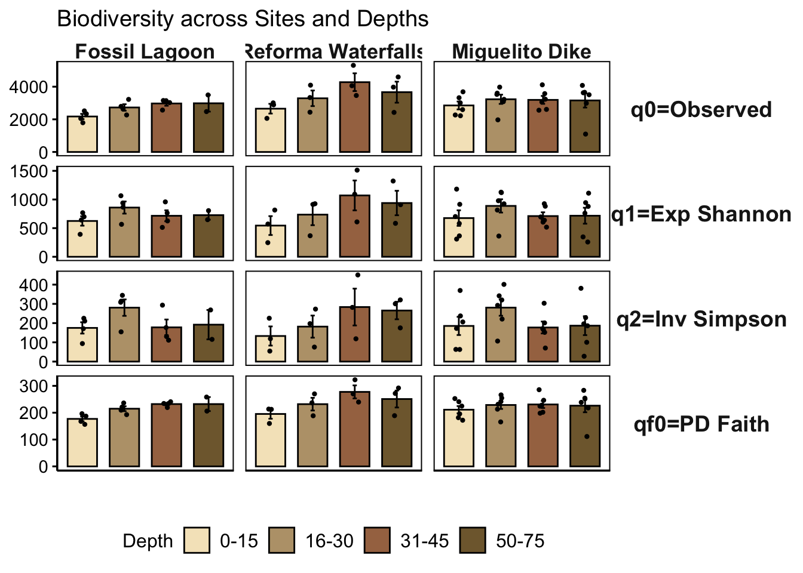
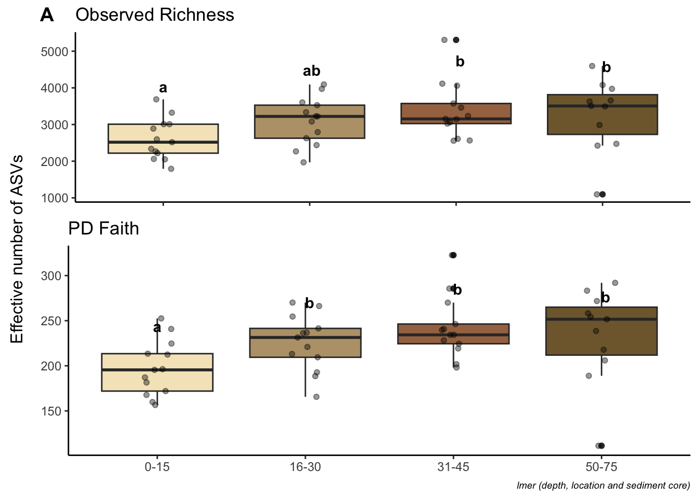

Alpha Diversity
Load libraries and prepare data
#load data
ps <- readRDS("rds/interior_mangroves/phyloseq.rds")# Extract data from phyloseq object
#library(phyloseq)
otu_table <- otu_table(ps, taxa_are_rows = TRUE)
metadata <- as(sample_data(ps), "data.frame")01. Get Hill numbers
# Merge metadata with Hill numbers
q012f_all <- cbind(q0, q1, q2, qf) %>% as.data.frame() %>% rownames_to_column(var = "Sample")
metadata_with_hill <- q012f_all %>%
inner_join(metadata, by = c("Sample"="Sample"))
#save table
write.table(metadata_with_hill, "Tables/interior_mangroves/Metadata_with_hill.tsv", quote = FALSE, sep = "\t", row.names = TRUE, col.names=TRUE)
# show
metadata_with_hill %>% head() Sample q0 q1 q2 qf ID Depth Depths Site Sample_type Date
1 S1A015 2267 581 173 172 S1A 1 0-15 Site_1 Sediment 28/09/2023
2 S1A1530 3082 925 342 213 S1A 2 16-30 Site_1 Sediment 28/09/2023
3 S1A3050 3234 926 303 228 S1A 3 31-45 Site_1 Sediment 28/09/2023
4 S1A5075 3506 880 228 239 S1A 4 50-75 Site_1 Sediment 28/09/2023
5 S1B07 3011 364 63 225 S1B 1 0-15 Site_1 Sediment 28/09/2023
6 S1B2230 3973 1127 320 266 S1B 2 16-30 Site_1 Sediment 28/09/2023
Location Temp...C..int Salnidad..ppm.int Salinidad..ppt.int pH.int
1 Miguelito Dike 31.4 818 0.82 6.55
2 Miguelito Dike 31.4 818 0.82 6.55
3 Miguelito Dike 31.4 818 0.82 6.55
4 Miguelito Dike 31.4 818 0.82 6.55
5 Miguelito Dike 30.9 794 0.79 6.69
6 Miguelito Dike 30.9 794 0.79 6.69
pHsup Redox.medido.en.campo1 Redox.mV..Eh.int Temperatura...C.sup
1 7.34 -114 121 33.0
2 7.34 -114 121 33.0
3 7.34 -114 121 33.0
4 7.34 -114 121 33.0
5 7.79 -234 1 33.2
6 7.79 -234 1 33.2
Salnidad..ppm.sup Salinidad..ppt.sup Redox.medido.en.campo Redox.mV..Eh.sup
1 735 0.73 -108 127
2 735 0.73 -108 127
3 735 0.73 -108 127
4 735 0.73 -108 127
5 733 0.73 -136 99
6 733 0.73 -136 99
S.2..mg.l..campo ml.de.muestra1 Factor.de.dilucion1 S.2..mg.l. ID_M
1 7.73 25 1 7.73 S1a M
2 7.73 25 1 7.73 S1a M
3 7.73 25 1 7.73 S1a M
4 7.73 25 1 7.73 S1a M
5 7.09 25 1 7.09 S1b M
6 7.09 25 1 7.09 S1b M
SO.....mg.l..campo ml.de.muestra2 Factor.de.dilucion2 SO.....mg.l.
1 53.7 2 10 537
2 53.7 2 10 537
3 53.7 2 10 537
4 53.7 2 10 537
5 55.0 2 10 550
6 55.0 2 10 55002. Get Hill means
# Reorder q values
meta_qs <- metadata_with_hill %>%
pivot_longer(cols = q0:qf, names_to = "q", values_to = "value") %>%
filter(q %in% c("q0", "q1", "q2", "qf")) %>%
mutate(
qs = case_when(
q == "q0" ~ "q0=Observed",
q == "q1" ~ "q1=Exp Shannon",
q == "q2" ~ "q2=Inv Simpson",
q == "qf" ~ "q0f=PD Faith"
))
#Get means of Hill numbers
means <- meta_qs %>% group_by(Depth, Site, Location, qs) %>%
summarise(means = mean(value, na.rm = TRUE),
sd = sd(value, na.rm = TRUE),
.groups = 'drop')
#save table
write.table(means, "Tables/interior_mangroves/Hill_means_sd.tsv", quote = FALSE, sep = "\t", row.names = TRUE, col.names=TRUE)
print(means)# A tibble: 108 × 6
Depth Site Location qs means sd
<int> <chr> <chr> <chr> <dbl> <dbl>
1 1 Site_1 Miguelito Dike q0=Observed 2639 526.
2 1 Site_1 Miguelito Dike q0f=PD Faith 198. 37.3
3 1 Site_1 Miguelito Dike q1=Exp Shannon 473. 153.
4 1 Site_1 Miguelito Dike q2=Inv Simpson 118. 77.4
5 1 Site_2 Miguelito Dike q0=Observed 3142. 771.
6 1 Site_2 Miguelito Dike q0f=PD Faith 224. 40.4
7 1 Site_2 Miguelito Dike q1=Exp Shannon 941. 339.
8 1 Site_2 Miguelito Dike q2=Inv Simpson 288. 116.
9 1 Site_3 Miguelito Dike q0=Observed 2771 781.
10 1 Site_3 Miguelito Dike q0f=PD Faith 211. 41.9
# ℹ 98 more rows#Get means of Hill numbers
hillmeansloc <- meta_qs %>% group_by(Depth, Location, qs) %>%
summarise(means = mean(value, na.rm = TRUE),
sd = sd(value, na.rm = TRUE),
.groups = 'drop')
hillmeansloc# A tibble: 48 × 5
Depth Location qs means sd
<int> <chr> <chr> <dbl> <dbl>
1 1 Fossil Lagoon q0=Observed 2174. 319.
2 1 Fossil Lagoon q0f=PD Faith 177. 18.0
3 1 Fossil Lagoon q1=Exp Shannon 625. 164.
4 1 Fossil Lagoon q2=Inv Simpson 175. 58.9
5 1 Miguelito Dike q0=Observed 2850. 592.
6 1 Miguelito Dike q0f=PD Faith 211. 33.0
7 1 Miguelito Dike q1=Exp Shannon 675. 333.
8 1 Miguelito Dike q2=Inv Simpson 185. 116.
9 1 Reforma Waterfalls q0=Observed 2653. 517.
10 1 Reforma Waterfalls q0f=PD Faith 195. 30.7
# ℹ 38 more rows#save table
write.table(hillmeansloc, "Tables/interior_mangroves/Hill_means_sd_location.tsv", quote = FALSE, sep = "\t", row.names = TRUE, col.names=TRUE)03. Get sequencing effort
# faster
#library(vegan)
mat <- as(t(otu_table(ps)), "matrix")
raremax <- min(rowSums(mat))
# loc colors
location_factor <- sample_data(ps)$Location
sample_colors <- loc_colors[as.character(location_factor)]
# font size
par(cex = 0.6)
# Rarefaction curves
system.time(rarecurve(mat, step = 100, sample = raremax,
col = sample_colors, label = FALSE)) user system elapsed
53.07 2.16 55.53 # save
pdf("Figures/interior_mangroves/Sample_effort.pdf")
system.time(rarecurve(mat, step = 100, sample = raremax,
col = sample_colors, label = FALSE)) user system elapsed
49.8 2.7 52.7 dev.off()quartz_off_screen
2 #slow but pretty
#library(ranacapa)
#library(ggplot2)
#effort_sampling<- ggrare(ps3, step = 100, color = "sample", label = "sampleID", se = TRUE)
#rarecurves_plot <- effort_sampling + facet_wrap(~sample)04. Explore hill distribution
Following the calculation of the diversity indices and confirmation of adequate sequencing effort, an investigation was conducted on their distribution along the sampled sites and depths.
# factor to reorder plot
metadata_with_hill$Location <- factor(metadata_with_hill$Location, levels = c("Fossil Lagoon", "Reforma Waterfalls", "Miguelito Dike"))
metadata_with_hill$Depth <-
factor(metadata_with_hill$Depths,
levels = c("0-15", "16-30", "31-45", "50-75"))
#plot
hill_barplot_explore <- metadata_with_hill %>%
pivot_longer(cols = q0:qf, names_to = "q", values_to = "value") %>%
filter(q %in% c("q0", "q1", "q2", "qf")) %>%
mutate(
qs = case_when(
q == "q0" ~ "q0=Observed",
q == "q1" ~ "q1=Exp Shannon",
q == "q2" ~ "q2=Inv Simpson",
q == "qf" ~ "qf0=PD Faith")) %>%
ggbarplot(
x = "Depth",
y = "value",
add = "mean_se",
facet.by = c("qs", "Location"),
fill = "Depth") +
scale_fill_manual(values = depth_colors) +
geom_jitter(size = 0.8,
position = position_jitter(width = 0.1)) +
facet_grid(rows = vars(qs), cols = vars(Location),
scales = "free_y") +
theme(
strip.background = element_blank(),
strip.text.x = element_text(face= "bold", size = 13,
margin = margin(0.5, 0, 0.5, 0)),
strip.text.y = element_text(face= "bold", size = 14,
angle = 0, margin = margin(0, 0.5, 0, 0.5)),
axis.text.x = element_blank(),
axis.ticks.x = element_blank(),
axis.line = element_line(colour = "black"),
#panel.border = element_blank(),
panel.spacing.x = unit(0.5, "lines"),
panel.background = element_blank(),
axis.title.y = element_blank(),
axis.text.y = element_text(colour = "black", size = 11),
legend.position = "bottom") +
labs(
fill = "Depth",
y = "",
x = "",
title = "Biodiversity across Sites and Depths") +
theme(legend.text = element_text(size = 12))
hill_barplot_explore
ggsave("Figures/interior_mangroves/Hill_diversity_across_Sites_and_Depths.pdf", hill_barplot_explore, width = 11, height = 11)At this juncture, the available data permits only the observation of the distribution of the phenomenon under study. However, it must be noted that comparisons at this stage may prove misleading due to the presence of other variables that must be considered to accurately assess the observed differences.
05. Check alpha diversity correlation with sequencing depth
#Get effective reads
Effective_reads <- colSums(otu_table[-1, ])
metadata_with_hill$Effective_reads <- Effective_readsAlpha diversity depth correlation to order q=0
# library(ggpubr)
q0_vs_depth <- ggscatter(metadata_with_hill,
x = "Effective_reads", y = "q0",
xlab= "Sequencing depth (number of reads)",
ylab = "q=0", add = "reg.line",
add.params = list(color = "#114e9d", fill = "lightgray"),
conf.int = TRUE, # Add confidence interval
cor.coef = TRUE, # Add correlation coefficient.
cor.coeff.args = list(method = "pearson", label.x = 3, label.sep = "\n")
)+
theme(legend.title = element_blank(), legend.position = "none")Alpha diversity depth correlation to order q=1
q1_vs_depth <- ggscatter(metadata_with_hill,
x = "Effective_reads", y = "q1",
xlab= "Sequencing depth (number of reads)",
ylab = "q=1", add = "reg.line",
add.params = list(color = "#114e9d", fill = "lightgray"),
conf.int = TRUE, # Add confidence interval
cor.coef = TRUE, # Add correlation coefficient
cor.coeff.args = list(method = "pearson", label.x = 3, label.sep = "\n")) +
theme(legend.title = element_blank(),
legend.position = "none")Alpha diversity depth correlation to order q=2
q2_vs_depth <- ggscatter(metadata_with_hill,
x = "Effective_reads", y = "q2",
xlab= "Sequencing depth (number of reads)",
ylab = "q=2", add = "reg.line",
add.params = list(color = "#114e9d", fill = "lightgray"),
conf.int = TRUE, # Add confidence interval
cor.coef = TRUE, # Add correlation coefficient
cor.coeff.args = list(method = "pearson", label.x = 3, label.sep = "\n")) +
theme(legend.title = element_blank(),
legend.position = "none")qf_vs_depth <- ggscatter(metadata_with_hill,
x = "Effective_reads", y = "qf",
xlab= "Sequencing depth (number of reads)",
ylab = "q=phy", add = "reg.line",
add.params = list(color = "#114e9d", fill = "lightgray"),
conf.int = TRUE, # Add confidence interval
cor.coef = TRUE, # Add correlation coefficient
cor.coeff.args = list(method = "pearson", label.x = 3, label.sep = "\n")) +
theme(legend.title = element_blank(),
legend.position = "none")# library(ggplot2)
# library(cowplot)
#Combine plot
title_corr_plot <- ggdraw() +
draw_label("Alpha diversity depth correlation")
correlation_plot_q012 <- plot_grid(title_corr_plot,
q0_vs_depth,
q1_vs_depth,
q2_vs_depth,
ncol = 1,
rel_heights = c(0.15, 1, 1, 1))
correlation_plot_q012# #save plot
ggsave("Figures/interior_mangroves/alpha_depth_correlation.pdf", correlation_plot_q012, width = 8, height = 8)We found a slight positive correlation between observed richness and sequencing depth, indicating that this variable should be considered when conducting meaningful comparisons of this index.
06. Check Hill numbers Normality
A methodology that can be used to evaluate the most appropriate test to employ in cases where significant differences between comparisons are identified is to ascertain the normality of the data. In this instance, the normality of the diversity indices was assessed.
Shapiro test to Hill numbers
#Shapiro test
shapiro_q0 <- shapiro.test(metadata_with_hill$q0)
shapiro_q0_pvalue <- round(shapiro_q0$p.value, 5)
shapiro_q1 <- shapiro.test(metadata_with_hill$q1)
shapiro_q1_pvalue <- round(shapiro_q1$p.value, 5)
shapiro_q2 <- shapiro.test(metadata_with_hill$q2)
shapiro_q2_pvalue <- round(shapiro_q2$p.value, 5)
#Histograms
histplot_q0 <- ggplot(metadata_with_hill, aes(x = q0, xlab="q=0")) +
geom_histogram(fill = "lightblue", bins = 15) +
ggtitle(paste("Shapiro, p-value:", shapiro_q0_pvalue)) +
theme_bw() + xlab("q=0") + ylab("Frequency")
histplot_q1 <- ggplot(metadata_with_hill, aes(x = q1)) +
geom_histogram(fill = "lightblue", bins = 15) +
ggtitle(paste("Shapiro, p-value:", shapiro_q1_pvalue)) +
theme_bw() + xlab("q=1") + ylab("Frequency")
histplot_q2 <- ggplot(metadata_with_hill, aes(x = q2)) +
geom_histogram(fill = "lightblue", bins = 15) +
ggtitle(paste("Shapiro, p-value:", shapiro_q2_pvalue)) +
theme_bw() + xlab("q=2") + ylab("Frequency")
#Combine plot
title_plot <- ggdraw() + draw_label("Histogram of Hill diversity") #, fontface = 'bold', x = 0.5, hjust = 0.5)
histplot_q012 <- plot_grid(title_plot, histplot_q0, histplot_q1, histplot_q2, labels = c(" ","A", "B", "C"), ncol = 1, rel_heights = c(0.15, 1, 1, 1))
histplot_q012#save plot
ggsave("Figures/interior_mangroves/hill_normality_shapiro.png", histplot_q012)Saving 7 x 5 in imageDespite the observed normal distribution, sequencing depth, the presence of repeated measures, and imbalances in the project data necessitates model-based comparison. In this instance, the utilization of linear mixed models is a good way to evaluate effects and differences.
07. Get significant differences
The significance of the observed differences among mangrove systems was determined by employing a linear mixed model, given the imbalanced sample numbers.
# Change fossil lagoon reference
metadata_with_hill$Location <- relevel(metadata_with_hill$Location, ref = "Fossil Lagoon")By depth
q0 Observed Richness
# lmm
q0lmer <- lmer(q0 ~ log(Effective_reads) + Depths + Location + (1 | ID), data = metadata_with_hill)
# summary
summary(q0lmer)Linear mixed model fit by REML. t-tests use Satterthwaite's method [
lmerModLmerTest]
Formula: q0 ~ log(Effective_reads) + Depths + Location + (1 | ID)
Data: metadata_with_hill
REML criterion at convergence: 680
Scaled residuals:
Min 1Q Median 3Q Max
-2.3093 -0.5309 -0.0431 0.4842 1.8144
Random effects:
Groups Name Variance Std.Dev.
ID (Intercept) 210009 458
Residual 209059 457
Number of obs: 50, groups: ID, 13
Fixed effects:
Estimate Std. Error df t value Pr(>|t|)
(Intercept) -5467.48 2792.66 37.52 -1.96 0.05772 .
log(Effective_reads) 643.23 232.78 37.02 2.76 0.00886 **
Depths16-30 444.48 180.16 32.87 2.47 0.01900 *
Depths31-45 699.07 181.59 32.94 3.85 0.00052 ***
Depths50-75 547.05 189.70 33.13 2.88 0.00686 **
LocationReforma Waterfalls 752.10 394.68 9.85 1.91 0.08628 .
LocationMiguelito Dike 396.38 334.63 9.97 1.18 0.26366
---
Signif. codes: 0 '***' 0.001 '**' 0.01 '*' 0.05 '.' 0.1 ' ' 1
Correlation of Fixed Effects:
(Intr) lg(E_) D16-30 D31-45 D50-75 LctnRW
lg(Effctv_) -0.995
Depths16-30 0.063 -0.095
Depths31-45 0.124 -0.157 0.507
Depths50-75 0.018 -0.045 0.475 0.474
LctnRfrmWtr -0.017 -0.044 0.004 0.007 -0.039
LoctnMgltDk -0.028 -0.044 0.004 0.007 -0.046 0.517# Permutation test con lmerTest
perm_test <- rand(q0lmer, nsim = 1000)
perm_testANOVA-like table for random-effects: Single term deletions
Model:
q0 ~ log(Effective_reads) + Depths + Location + (1 | ID)
npar logLik AIC LRT Df Pr(>Chisq)
<none> 9 -340 698
(1 | ID) 8 -346 707 10.8 1 0.001 **
---
Signif. codes: 0 '***' 0.001 '**' 0.01 '*' 0.05 '.' 0.1 ' ' 1#effects
anova(q0lmer)Type III Analysis of Variance Table with Satterthwaite's method
Sum Sq Mean Sq NumDF DenDF F value Pr(>F)
log(Effective_reads) 1596301 1596301 1 37.0 7.64 0.0089 **
Depths 3412939 1137646 3 33.0 5.44 0.0037 **
Location 770456 385228 2 9.8 1.84 0.2094
---
Signif. codes: 0 '***' 0.001 '**' 0.01 '*' 0.05 '.' 0.1 ' ' 1# check model reliability
report(q0lmer)Formula contains log- or sqrt-terms.
See help("standardize") for how such terms are standardized.
Formula contains log- or sqrt-terms.
See help("standardize") for how such terms are standardized.We fitted a linear mixed model (estimated using REML and nloptwrap optimizer)
to predict q0 with Effective_reads, Depths and Location (formula: q0 ~
log(Effective_reads) + Depths + Location). The model included ID as random
effect (formula: ~1 | ID). The model's total explanatory power is substantial
(conditional R2 = 0.67) and the part related to the fixed effects alone
(marginal R2) is of 0.34. The model's intercept, corresponding to
Effective_reads = 0, Depths = 0-15 and Location = Fossil Lagoon, is at -5467.48
(95% CI [-11107.37, 172.40], t(41) = -1.96, p = 0.057). Within this model:
- The effect of Effective reads [log] is statistically significant and positive
(beta = 643.23, 95% CI [173.12, 1113.33], t(41) = 2.76, p = 0.009; Std. beta =
0.89, 95% CI [0.23, 1.54])
- The effect of Depths [16-30] is statistically significant and positive (beta
= 444.48, 95% CI [80.64, 808.32], t(41) = 2.47, p = 0.018; Std. beta = 0.57,
95% CI [0.10, 1.04])
- The effect of Depths [31-45] is statistically significant and positive (beta
= 699.07, 95% CI [332.34, 1065.79], t(41) = 3.85, p < .001; Std. beta = 0.90,
95% CI [0.43, 1.37])
- The effect of Depths [50-75] is statistically significant and positive (beta
= 547.05, 95% CI [163.93, 930.16], t(41) = 2.88, p = 0.006; Std. beta = 0.69,
95% CI [0.20, 1.19])
- The effect of Location [Reforma Waterfalls] is statistically non-significant
and positive (beta = 752.10, 95% CI [-44.97, 1549.17], t(41) = 1.91, p = 0.064;
Std. beta = 0.97, 95% CI [-0.06, 1.99])
- The effect of Location [Miguelito Dike] is statistically non-significant and
positive (beta = 396.38, 95% CI [-279.41, 1072.18], t(41) = 1.18, p = 0.243;
Std. beta = 0.51, 95% CI [-0.36, 1.38])
Standardized parameters were obtained by fitting the model on a standardized
version of the dataset. 95% Confidence Intervals (CIs) and p-values were
computed using a Wald t-distribution approximation.# get differences with emmeans
q0_lmer_means <- emmeans(q0lmer, pairwise ~ Depths)
# get significance letters
cld_results <- cld(object = q0_lmer_means$emmeans, Letters = letters)
# Convert to data frame
q0_emmeans_df <- as.data.frame(cld_results)
q0_emmeans_df Depths emmean SE df lower.CL upper.CL .group
0-15 2699 186 22.2 2313 3085 a
16-30 3143 184 21.6 2760 3526 ab
50-75 3246 196 25.3 2843 3648 b
31-45 3398 184 21.5 3015 3780 b
Results are averaged over the levels of: Location
Degrees-of-freedom method: kenward-roger
Confidence level used: 0.95
P value adjustment: tukey method for comparing a family of 4 estimates
significance level used: alpha = 0.05
NOTE: If two or more means share the same grouping symbol,
then we cannot show them to be different.
But we also did not show them to be the same. # boxplot with significance
q0plot <- ggplot(metadata_with_hill, aes(x = Depths, y = q0, fill = Depths)) +
geom_boxplot() +
geom_jitter(aes(fill = Depths), width = 0.1, alpha = 0.4) +
geom_text(data = q0_emmeans_df, aes(y = emmean, label = .group), vjust = -9, color = "black", fontface = "bold", position = position_dodge(0.9)) +
labs(title = "Observed Richness", y = NULL, x = NULL ) + #,
#caption = "letters by lmer emmeans") +
theme_classic() + scale_fill_manual(values = depth_colors) +
theme(legend.position = "none", axis.text.x = element_blank())
q0plotq1 Diversity Exp Shannon
# Fitted linear mixed model
q1lmer <- lmer(q1 ~ Depths+Location + (1 | ID), data = metadata_with_hill)
# summary
summary(q1lmer)Linear mixed model fit by REML. t-tests use Satterthwaite's method [
lmerModLmerTest]
Formula: q1 ~ Depths + Location + (1 | ID)
Data: metadata_with_hill
REML criterion at convergence: 627
Scaled residuals:
Min 1Q Median 3Q Max
-1.6697 -0.6187 0.0827 0.3962 2.4515
Random effects:
Groups Name Variance Std.Dev.
ID (Intercept) 35546 189
Residual 47469 218
Number of obs: 50, groups: ID, 13
Fixed effects:
Estimate Std. Error df t value Pr(>|t|)
(Intercept) 596.2 121.9 15.3 4.89 0.00019 ***
Depths16-30 214.1 85.5 34.2 2.51 0.01716 *
Depths31-45 165.5 85.5 34.2 1.94 0.06116 .
Depths50-75 131.8 90.3 34.5 1.46 0.15340
LocationReforma Waterfalls 98.3 168.0 10.3 0.59 0.57086
LocationMiguelito Dike 23.7 142.5 10.5 0.17 0.87137
---
Signif. codes: 0 '***' 0.001 '**' 0.01 '*' 0.05 '.' 0.1 ' ' 1
Correlation of Fixed Effects:
(Intr) D16-30 D31-45 D50-75 LctnRW
Depths16-30 -0.351
Depths31-45 -0.351 0.500
Depths50-75 -0.289 0.473 0.473
LctnRfrmWtr -0.598 0.000 0.000 -0.045
LoctnMgltDk -0.704 0.000 0.000 -0.053 0.518# lmerTest
perm_testq1 <- rand(q1lmer, nsim = 1000)
# Summary
perm_testq1ANOVA-like table for random-effects: Single term deletions
Model:
q1 ~ Depths + Location + (1 | ID)
npar logLik AIC LRT Df Pr(>Chisq)
<none> 8 -313 643
(1 | ID) 7 -318 650 8.94 1 0.0028 **
---
Signif. codes: 0 '***' 0.001 '**' 0.01 '*' 0.05 '.' 0.1 ' ' 1# Efects
anova(q1lmer)Type III Analysis of Variance Table with Satterthwaite's method
Sum Sq Mean Sq NumDF DenDF F value Pr(>F)
Depths 327747 109249 3 34.3 2.30 0.095 .
Location 17497 8749 2 10.2 0.18 0.834
---
Signif. codes: 0 '***' 0.001 '**' 0.01 '*' 0.05 '.' 0.1 ' ' 1#check_model(q1lmer)
report(q1lmer)We fitted a linear mixed model (estimated using REML and nloptwrap optimizer)
to predict q1 with Depths and Location (formula: q1 ~ Depths + Location). The
model included ID as random effect (formula: ~1 | ID). The model's total
explanatory power is substantial (conditional R2 = 0.48) and the part related
to the fixed effects alone (marginal R2) is of 0.09. The model's intercept,
corresponding to Depths = 0-15 and Location = Fossil Lagoon, is at 596.15 (95%
CI [350.16, 842.15], t(42) = 4.89, p < .001). Within this model:
- The effect of Depths [16-30] is statistically significant and positive (beta
= 214.10, 95% CI [41.64, 386.56], t(42) = 2.51, p = 0.016; Std. beta = 0.76,
95% CI [0.15, 1.38])
- The effect of Depths [31-45] is statistically non-significant and positive
(beta = 165.46, 95% CI [-7.00, 337.92], t(42) = 1.94, p = 0.060; Std. beta =
0.59, 95% CI [-0.02, 1.20])
- The effect of Depths [50-75] is statistically non-significant and positive
(beta = 131.76, 95% CI [-50.39, 313.91], t(42) = 1.46, p = 0.152; Std. beta =
0.47, 95% CI [-0.18, 1.12])
- The effect of Location [Reforma Waterfalls] is statistically non-significant
and positive (beta = 98.34, 95% CI [-240.64, 437.32], t(42) = 0.59, p = 0.561;
Std. beta = 0.35, 95% CI [-0.86, 1.56])
- The effect of Location [Miguelito Dike] is statistically non-significant and
positive (beta = 23.65, 95% CI [-263.97, 311.27], t(42) = 0.17, p = 0.869; Std.
beta = 0.08, 95% CI [-0.94, 1.11])
Standardized parameters were obtained by fitting the model on a standardized
version of the dataset. 95% Confidence Intervals (CIs) and p-values were
computed using a Wald t-distribution approximation.# Sig dif emmeans
q1_lmer_means <- emmeans(q1lmer, pairwise ~ Depths)
# letters
cld_resultsq1 <- cld(object = q1_lmer_means$emmeans, Letters = letters)
# Convert df
emmeans_dfq1 <- as.data.frame(cld_resultsq1)
emmeans_dfq1 Depths emmean SE df lower.CL upper.CL .group
0-15 637 81.8 24.7 468 805 a
50-75 769 87.1 28.6 590 947 a
31-45 802 81.8 24.7 634 971 a
16-30 851 81.8 24.7 682 1019 a
Results are averaged over the levels of: Location
Degrees-of-freedom method: kenward-roger
Confidence level used: 0.95
P value adjustment: tukey method for comparing a family of 4 estimates
significance level used: alpha = 0.05
NOTE: If two or more means share the same grouping symbol,
then we cannot show them to be different.
But we also did not show them to be the same. # plot
q1plot <- ggplot(metadata_with_hill, aes(x = Depths, y = q1, fill = Depths)) +
geom_boxplot() +
geom_jitter(aes(fill = Depths), width = 0.1, alpha = 0.4) +
geom_text(data = emmeans_dfq1, aes(y = emmean, label = .group), vjust = -9, color = "black", fontface = "bold",position = position_dodge(0.9)) +
labs(title = "Exp Shannon", y = NULL, x = NULL ) + #,
#caption = "letters by lmer emmeans") +
theme_bw() + scale_fill_manual(values = depth_colors) +
theme(legend.position = "none")
q1plotq2 Dominance Inv Simpson
# Fitted linear mixed model
q2lmer <- lmer(q2 ~ Depths+Location +(1 | ID), data = metadata_with_hill)
#summary
summary(q2lmer)Linear mixed model fit by REML. t-tests use Satterthwaite's method [
lmerModLmerTest]
Formula: q2 ~ Depths + Location + (1 | ID)
Data: metadata_with_hill
REML criterion at convergence: 542
Scaled residuals:
Min 1Q Median 3Q Max
-1.7063 -0.6064 0.0468 0.5556 2.3862
Random effects:
Groups Name Variance Std.Dev.
ID (Intercept) 2840 53.3
Residual 7832 88.5
Number of obs: 50, groups: ID, 13
Fixed effects:
Estimate Std. Error df t value Pr(>|t|)
(Intercept) 166.94 41.16 18.56 4.06 0.0007 ***
Depths16-30 87.60 34.71 34.19 2.52 0.0164 *
Depths31-45 31.89 34.71 34.19 0.92 0.3647
Depths50-75 35.58 36.61 34.70 0.97 0.3378
LocationReforma Waterfalls 10.23 53.74 10.38 0.19 0.8527
LocationMiguelito Dike 1.72 45.70 10.62 0.04 0.9706
---
Signif. codes: 0 '***' 0.001 '**' 0.01 '*' 0.05 '.' 0.1 ' ' 1
Correlation of Fixed Effects:
(Intr) D16-30 D31-45 D50-75 LctnRW
Depths16-30 -0.422
Depths31-45 -0.422 0.500
Depths50-75 -0.349 0.474 0.474
LctnRfrmWtr -0.570 0.000 0.000 -0.056
LoctnMgltDk -0.671 0.000 0.000 -0.066 0.525# lmerTest
perm_testq2 <- rand(q2lmer, nsim = 1000)
# Summary
perm_testq2ANOVA-like table for random-effects: Single term deletions
Model:
q2 ~ Depths + Location + (1 | ID)
npar logLik AIC LRT Df Pr(>Chisq)
<none> 8 -271 559
(1 | ID) 7 -273 560 3.5 1 0.061 .
---
Signif. codes: 0 '***' 0.001 '**' 0.01 '*' 0.05 '.' 0.1 ' ' 1# Efects
anova(q2lmer)Type III Analysis of Variance Table with Satterthwaite's method
Sum Sq Mean Sq NumDF DenDF F value Pr(>F)
Depths 51262 17087 3 34.4 2.18 0.11
Location 326 163 2 10.2 0.02 0.98#check_model(q2lmer)
report(q2lmer)We fitted a linear mixed model (estimated using REML and nloptwrap optimizer)
to predict q2 with Depths and Location (formula: q2 ~ Depths + Location). The
model included ID as random effect (formula: ~1 | ID). The model's total
explanatory power is substantial (conditional R2 = 0.33) and the part related
to the fixed effects alone (marginal R2) is of 0.09. The model's intercept,
corresponding to Depths = 0-15 and Location = Fossil Lagoon, is at 166.94 (95%
CI [83.88, 250.00], t(42) = 4.06, p < .001). Within this model:
- The effect of Depths [16-30] is statistically significant and positive (beta
= 87.60, 95% CI [17.55, 157.65], t(42) = 2.52, p = 0.015; Std. beta = 0.86, 95%
CI [0.17, 1.55])
- The effect of Depths [31-45] is statistically non-significant and positive
(beta = 31.89, 95% CI [-38.16, 101.94], t(42) = 0.92, p = 0.364; Std. beta =
0.31, 95% CI [-0.38, 1.00])
- The effect of Depths [50-75] is statistically non-significant and positive
(beta = 35.58, 95% CI [-38.29, 109.46], t(42) = 0.97, p = 0.337; Std. beta =
0.35, 95% CI [-0.38, 1.08])
- The effect of Location [Reforma Waterfalls] is statistically non-significant
and positive (beta = 10.23, 95% CI [-98.22, 118.68], t(42) = 0.19, p = 0.850;
Std. beta = 0.10, 95% CI [-0.97, 1.17])
- The effect of Location [Miguelito Dike] is statistically non-significant and
positive (beta = 1.72, 95% CI [-90.50, 93.94], t(42) = 0.04, p = 0.970; Std.
beta = 0.02, 95% CI [-0.89, 0.92])
Standardized parameters were obtained by fitting the model on a standardized
version of the dataset. 95% Confidence Intervals (CIs) and p-values were
computed using a Wald t-distribution approximation.# Sig dif emmeans
q2_lmer_means <- emmeans(q2lmer, pairwise ~ Depths)
# letters
cld_resultsq2 <- cld(object = q2_lmer_means$emmeans, Letters = letters)
# Convert df
emmeans_dfq2 <- as.data.frame(cld_resultsq2)
emmeans_dfq2 Depths emmean SE df lower.CL upper.CL .group
0-15 171 29.2 32.4 112 230 a
31-45 203 29.2 32.4 143 262 a
50-75 206 31.6 36.2 142 271 a
16-30 258 29.2 32.4 199 318 a
Results are averaged over the levels of: Location
Degrees-of-freedom method: kenward-roger
Confidence level used: 0.95
P value adjustment: tukey method for comparing a family of 4 estimates
significance level used: alpha = 0.05
NOTE: If two or more means share the same grouping symbol,
then we cannot show them to be different.
But we also did not show them to be the same. # plot
q2plot <- ggplot(metadata_with_hill, aes(x = Depths, y = q2, fill = Depths)) +
geom_boxplot() +
geom_jitter(aes(fill = Depths), width = 0.1, alpha = 0.4) +
geom_text(data = emmeans_dfq2, aes(y = emmean, label = .group), vjust = -9, color = "black", fontface = "bold",position = position_dodge(0.9)) +
labs(title = "q2 = Inv Simpson", y = NULL, x = NULL ) + #,
#caption = "letters by lmer emmeans") +
theme_bw() + scale_fill_manual(values = depth_colors) +
theme(legend.position = "none")
q2plotqf Faith Diversity
# Fitted linear mixed model
qflmer <- lmer(qf ~ + log(Effective_reads) + Depths + Location + (1 | ID), data = metadata_with_hill)
#summary
summary(qflmer)Linear mixed model fit by REML. t-tests use Satterthwaite's method [
lmerModLmerTest]
Formula: qf ~ +log(Effective_reads) + Depths + Location + (1 | ID)
Data: metadata_with_hill
REML criterion at convergence: 428
Scaled residuals:
Min 1Q Median 3Q Max
-2.6973 -0.3974 -0.0189 0.5074 1.9272
Random effects:
Groups Name Variance Std.Dev.
ID (Intercept) 620 24.9
Residual 589 24.3
Number of obs: 50, groups: ID, 13
Fixed effects:
Estimate Std. Error df t value Pr(>|t|)
(Intercept) -152.26 148.43 37.39 -1.03 0.31157
log(Effective_reads) 28.23 12.37 36.87 2.28 0.02836 *
Depths16-30 26.14 9.56 32.85 2.73 0.01003 *
Depths31-45 41.53 9.64 32.91 4.31 0.00014 ***
Depths50-75 32.48 10.07 33.10 3.23 0.00283 **
LocationReforma Waterfalls 25.37 21.34 9.83 1.19 0.26247
LocationMiguelito Dike 11.02 18.09 9.95 0.61 0.55613
---
Signif. codes: 0 '***' 0.001 '**' 0.01 '*' 0.05 '.' 0.1 ' ' 1
Correlation of Fixed Effects:
(Intr) lg(E_) D16-30 D31-45 D50-75 LctnRW
lg(Effctv_) -0.995
Depths16-30 0.063 -0.095
Depths31-45 0.125 -0.157 0.507
Depths50-75 0.019 -0.045 0.475 0.474
LctnRfrmWtr -0.019 -0.043 0.004 0.007 -0.038
LoctnMgltDk -0.030 -0.043 0.004 0.007 -0.045 0.517# lmerTest
perm_testqf <- rand(qflmer, nsim = 1000)
# Summary
perm_testqfANOVA-like table for random-effects: Single term deletions
Model:
qf ~ log(Effective_reads) + Depths + Location + (1 | ID)
npar logLik AIC LRT Df Pr(>Chisq)
<none> 9 -214 446
(1 | ID) 8 -220 456 11.3 1 0.00078 ***
---
Signif. codes: 0 '***' 0.001 '**' 0.01 '*' 0.05 '.' 0.1 ' ' 1# Efects
anova(qflmer)Type III Analysis of Variance Table with Satterthwaite's method
Sum Sq Mean Sq NumDF DenDF F value Pr(>F)
log(Effective_reads) 3067 3067 1 36.9 5.21 0.0284 *
Depths 12031 4010 3 33.0 6.81 0.0011 **
Location 832 416 2 9.8 0.71 0.5169
---
Signif. codes: 0 '***' 0.001 '**' 0.01 '*' 0.05 '.' 0.1 ' ' 1#check_model(qflmer)
report(qflmer)Formula contains log- or sqrt-terms.
See help("standardize") for how such terms are standardized.
Formula contains log- or sqrt-terms.
See help("standardize") for how such terms are standardized.We fitted a linear mixed model (estimated using REML and nloptwrap optimizer)
to predict qf with Effective_reads, Depths and Location (formula: qf ~
+log(Effective_reads) + Depths + Location). The model included ID as random
effect (formula: ~1 | ID). The model's total explanatory power is substantial
(conditional R2 = 0.65) and the part related to the fixed effects alone
(marginal R2) is of 0.28. The model's intercept, corresponding to
Effective_reads = 0, Depths = 0-15 and Location = Fossil Lagoon, is at -152.26
(95% CI [-452.03, 147.50], t(41) = -1.03, p = 0.311). Within this model:
- The effect of Effective reads [log] is statistically significant and positive
(beta = 28.23, 95% CI [3.25, 53.21], t(41) = 2.28, p = 0.028; Std. beta = 0.76,
95% CI [0.08, 1.44])
- The effect of Depths [16-30] is statistically significant and positive (beta
= 26.14, 95% CI [6.82, 45.45], t(41) = 2.73, p = 0.009; Std. beta = 0.66, 95%
CI [0.17, 1.14])
- The effect of Depths [31-45] is statistically significant and positive (beta
= 41.53, 95% CI [22.06, 61.00], t(41) = 4.31, p < .001; Std. beta = 1.04, 95%
CI [0.55, 1.53])
- The effect of Depths [50-75] is statistically significant and positive (beta
= 32.48, 95% CI [12.14, 52.82], t(41) = 3.23, p = 0.002; Std. beta = 0.81, 95%
CI [0.30, 1.32])
- The effect of Location [Reforma Waterfalls] is statistically non-significant
and positive (beta = 25.37, 95% CI [-17.73, 68.46], t(41) = 1.19, p = 0.241;
Std. beta = 0.64, 95% CI [-0.44, 1.72])
- The effect of Location [Miguelito Dike] is statistically non-significant and
positive (beta = 11.02, 95% CI [-25.52, 47.55], t(41) = 0.61, p = 0.546; Std.
beta = 0.28, 95% CI [-0.64, 1.20])
Standardized parameters were obtained by fitting the model on a standardized
version of the dataset. 95% Confidence Intervals (CIs) and p-values were
computed using a Wald t-distribution approximation.# Sig dif emmeans
qf_lmer_means <- emmeans(qflmer, pairwise ~ Depths)
# letters
cld_resultsqf <- cld(object = qf_lmer_means$emmeans, Letters = letters)
# Convert df
emmeans_dfqf <- as.data.frame(cld_resultsqf)
emmeans_dfqf Depths emmean SE df lower.CL upper.CL .group
0-15 202 10.01 21.7 181 222 a
16-30 228 9.91 21.2 207 248 b
50-75 234 10.50 24.8 212 256 b
31-45 243 9.90 21.1 222 264 b
Results are averaged over the levels of: Location
Degrees-of-freedom method: kenward-roger
Confidence level used: 0.95
P value adjustment: tukey method for comparing a family of 4 estimates
significance level used: alpha = 0.05
NOTE: If two or more means share the same grouping symbol,
then we cannot show them to be different.
But we also did not show them to be the same. # plot
qfplot <- ggplot(metadata_with_hill, aes(x = Depths, y = qf, fill = Depths)) +
geom_boxplot() +
geom_jitter(aes(fill = Depths), width = 0.1, alpha = 0.4) +
geom_text(data = emmeans_dfqf, aes(y = emmean, label = .group), vjust = -8, color = "black", fontface = "bold", position = position_dodge(0.9)) +
labs(title = "PD Faith", y = NULL, x = NULL,
caption = "letters by lmer emmeans \n
taken depth, location and sediment core") +
theme_classic() + scale_fill_manual(values = depth_colors) +
theme(legend.position = "none")
qfplot
Combine plots
A combined plot of the observed richness and phylogenetic diversity was created because the former two indices showed significant differences.
#Combine plot
ytitle <- ggdraw() + draw_label("Effective number of ASVs", angle = 90, size = 12)
alphaplots <- plot_grid(q0plot, qfplot, ncol = 1, rel_heights = c(1, 1))
alphaplots_y <- plot_grid(ytitle, alphaplots, ncol = 2, rel_widths = c(0.05, 1), labels = c("A", ""))
alphaplots_y
# save
ggsave("Figures/interior_mangroves/alpha_per_depth.pdf",alphaplots_y, width = 6, height = 8)By location
q0 Observed Richness
# lmm
q0lmerloc <- lmer(q0 ~ log(Effective_reads) + Location + Depths + (1 | ID), data = metadata_with_hill)
# summary
summary(q0lmerloc)Linear mixed model fit by REML. t-tests use Satterthwaite's method [
lmerModLmerTest]
Formula: q0 ~ log(Effective_reads) + Location + Depths + (1 | ID)
Data: metadata_with_hill
REML criterion at convergence: 680
Scaled residuals:
Min 1Q Median 3Q Max
-2.3093 -0.5309 -0.0431 0.4842 1.8144
Random effects:
Groups Name Variance Std.Dev.
ID (Intercept) 210009 458
Residual 209059 457
Number of obs: 50, groups: ID, 13
Fixed effects:
Estimate Std. Error df t value Pr(>|t|)
(Intercept) -5467.48 2792.66 37.52 -1.96 0.05772 .
log(Effective_reads) 643.23 232.78 37.02 2.76 0.00886 **
LocationReforma Waterfalls 752.10 394.68 9.85 1.91 0.08628 .
LocationMiguelito Dike 396.38 334.63 9.97 1.18 0.26366
Depths16-30 444.48 180.16 32.87 2.47 0.01900 *
Depths31-45 699.07 181.59 32.94 3.85 0.00052 ***
Depths50-75 547.05 189.70 33.13 2.88 0.00686 **
---
Signif. codes: 0 '***' 0.001 '**' 0.01 '*' 0.05 '.' 0.1 ' ' 1
Correlation of Fixed Effects:
(Intr) lg(E_) LctnRW LctnMD D16-30 D31-45
lg(Effctv_) -0.995
LctnRfrmWtr -0.017 -0.044
LoctnMgltDk -0.028 -0.044 0.517
Depths16-30 0.063 -0.095 0.004 0.004
Depths31-45 0.124 -0.157 0.007 0.007 0.507
Depths50-75 0.018 -0.045 -0.039 -0.046 0.475 0.474# Permutation test
perm_testloc <- rand(q0lmerloc, nsim = 1000)
perm_testlocANOVA-like table for random-effects: Single term deletions
Model:
q0 ~ log(Effective_reads) + Location + Depths + (1 | ID)
npar logLik AIC LRT Df Pr(>Chisq)
<none> 9 -340 698
(1 | ID) 8 -346 707 10.8 1 0.001 **
---
Signif. codes: 0 '***' 0.001 '**' 0.01 '*' 0.05 '.' 0.1 ' ' 1#effects
anova(q0lmerloc)Type III Analysis of Variance Table with Satterthwaite's method
Sum Sq Mean Sq NumDF DenDF F value Pr(>F)
log(Effective_reads) 1596301 1596301 1 37.0 7.64 0.0089 **
Location 770456 385228 2 9.8 1.84 0.2094
Depths 3412939 1137646 3 33.0 5.44 0.0037 **
---
Signif. codes: 0 '***' 0.001 '**' 0.01 '*' 0.05 '.' 0.1 ' ' 1# emmeans
q0_lmer_means_loc <- emmeans(q0lmerloc, pairwise ~ Location)
# significance letters
q0cld_results_loc <- cld(object = q0_lmer_means_loc$emmeans, Letters = letters)
# Convert to data frame
q0emmeans_df_loc <- as.data.frame(q0cld_results_loc)
q0emmeans_df_loc Location emmean SE df lower.CL upper.CL .group
Fossil Lagoon 2739 262 10.58 2159 3318 a
Miguelito Dike 3135 209 9.72 2667 3603 a
Reforma Waterfalls 3491 296 9.69 2829 4152 a
Results are averaged over the levels of: Depths
Degrees-of-freedom method: kenward-roger
Confidence level used: 0.95
P value adjustment: tukey method for comparing a family of 3 estimates
significance level used: alpha = 0.05
NOTE: If two or more means share the same grouping symbol,
then we cannot show them to be different.
But we also did not show them to be the same. # boxplot with significance
q0plotloc <- ggplot(metadata_with_hill, aes(x = Location, y = q0, fill = Location)) +
geom_boxplot() +
geom_jitter(aes(fill = Location), width = 0.1, alpha = 0.4) +
geom_text(data = q0emmeans_df_loc, aes(y = emmean, label = .group), vjust = -5, color = "black", fontface = "bold", position = position_dodge(0.9)) +
labs(title = "Observed Richness", y = NULL, x = NULL ) + #,
#caption = "letters by lmer emmeans") +
theme_classic() + scale_fill_manual(values = loc_colors) +
theme(legend.position = "none", axis.text.x = element_blank())q1 Exp Shannon diversity
# lmm
q1lmerloc <- lmer(q1 ~ Location + Depths + (1 | ID), data = metadata_with_hill)
# summary
summary(q1lmerloc)Linear mixed model fit by REML. t-tests use Satterthwaite's method [
lmerModLmerTest]
Formula: q1 ~ Location + Depths + (1 | ID)
Data: metadata_with_hill
REML criterion at convergence: 627
Scaled residuals:
Min 1Q Median 3Q Max
-1.6697 -0.6187 0.0827 0.3962 2.4515
Random effects:
Groups Name Variance Std.Dev.
ID (Intercept) 35546 189
Residual 47469 218
Number of obs: 50, groups: ID, 13
Fixed effects:
Estimate Std. Error df t value Pr(>|t|)
(Intercept) 596.2 121.9 15.3 4.89 0.00019 ***
LocationReforma Waterfalls 98.3 168.0 10.3 0.59 0.57086
LocationMiguelito Dike 23.7 142.5 10.5 0.17 0.87137
Depths16-30 214.1 85.5 34.2 2.51 0.01716 *
Depths31-45 165.5 85.5 34.2 1.94 0.06116 .
Depths50-75 131.8 90.3 34.5 1.46 0.15340
---
Signif. codes: 0 '***' 0.001 '**' 0.01 '*' 0.05 '.' 0.1 ' ' 1
Correlation of Fixed Effects:
(Intr) LctnRW LctnMD D16-30 D31-45
LctnRfrmWtr -0.598
LoctnMgltDk -0.704 0.518
Depths16-30 -0.351 0.000 0.000
Depths31-45 -0.351 0.000 0.000 0.500
Depths50-75 -0.289 -0.045 -0.053 0.473 0.473# Permutation test
perm_testlocq1 <- rand(q1lmerloc, nsim = 1000)
perm_testlocq1ANOVA-like table for random-effects: Single term deletions
Model:
q1 ~ Location + Depths + (1 | ID)
npar logLik AIC LRT Df Pr(>Chisq)
<none> 8 -313 643
(1 | ID) 7 -318 650 8.94 1 0.0028 **
---
Signif. codes: 0 '***' 0.001 '**' 0.01 '*' 0.05 '.' 0.1 ' ' 1#effects
anova(q1lmerloc)Type III Analysis of Variance Table with Satterthwaite's method
Sum Sq Mean Sq NumDF DenDF F value Pr(>F)
Location 17497 8749 2 10.2 0.18 0.834
Depths 327747 109249 3 34.3 2.30 0.095 .
---
Signif. codes: 0 '***' 0.001 '**' 0.01 '*' 0.05 '.' 0.1 ' ' 1# Differences emmeans
q1lmer_means_loc <- emmeans(q1lmerloc, pairwise ~ Location)
# significance letters
q1cld_results_loc <- cld(object = q1lmer_means_loc$emmeans, Letters = letters)
# Convert to data frame
q1emmeans_df_loc <- as.data.frame(q1cld_results_loc)
q1emmeans_df_loc Location emmean SE df lower.CL upper.CL .group
Fossil Lagoon 724 111.5 10.65 478 970 a
Miguelito Dike 748 88.9 9.76 549 946 a
Reforma Waterfalls 822 125.7 9.76 541 1103 a
Results are averaged over the levels of: Depths
Degrees-of-freedom method: kenward-roger
Confidence level used: 0.95
P value adjustment: tukey method for comparing a family of 3 estimates
significance level used: alpha = 0.05
NOTE: If two or more means share the same grouping symbol,
then we cannot show them to be different.
But we also did not show them to be the same. # boxplot with significance
q1plotloc <- ggplot(metadata_with_hill, aes(x = Location, y = q1, fill = Location)) +
geom_boxplot() +
geom_jitter(aes(fill = Location), width = 0.1, alpha = 0.4) +
geom_text(data = q1emmeans_df_loc, aes(y = emmean, label = .group), vjust = -5, color = "black", fontface = "bold", position = position_dodge(0.9)) +
labs(title = "Exp Shannon", y = NULL, x = NULL ) + #,
#caption = "letters by lmer emmeans") +
theme_classic() + scale_fill_manual(values = loc_colors) +
theme(legend.position = "none", axis.text.x = element_blank())q2 Dominance Inv Simpson
# lmm
q2lmerloc <- lmer(q2 ~ Location + Depths + (1 | ID), data = metadata_with_hill)
# summary
summary(q2lmerloc)Linear mixed model fit by REML. t-tests use Satterthwaite's method [
lmerModLmerTest]
Formula: q2 ~ Location + Depths + (1 | ID)
Data: metadata_with_hill
REML criterion at convergence: 542
Scaled residuals:
Min 1Q Median 3Q Max
-1.7063 -0.6064 0.0468 0.5556 2.3862
Random effects:
Groups Name Variance Std.Dev.
ID (Intercept) 2840 53.3
Residual 7832 88.5
Number of obs: 50, groups: ID, 13
Fixed effects:
Estimate Std. Error df t value Pr(>|t|)
(Intercept) 166.94 41.16 18.56 4.06 0.0007 ***
LocationReforma Waterfalls 10.23 53.74 10.38 0.19 0.8527
LocationMiguelito Dike 1.72 45.70 10.62 0.04 0.9706
Depths16-30 87.60 34.71 34.19 2.52 0.0164 *
Depths31-45 31.89 34.71 34.19 0.92 0.3647
Depths50-75 35.58 36.61 34.70 0.97 0.3378
---
Signif. codes: 0 '***' 0.001 '**' 0.01 '*' 0.05 '.' 0.1 ' ' 1
Correlation of Fixed Effects:
(Intr) LctnRW LctnMD D16-30 D31-45
LctnRfrmWtr -0.570
LoctnMgltDk -0.671 0.525
Depths16-30 -0.422 0.000 0.000
Depths31-45 -0.422 0.000 0.000 0.500
Depths50-75 -0.349 -0.056 -0.066 0.474 0.474perm_testlocq2 <- rand(q2lmerloc, nsim = 1000)
perm_testlocq2
#effects
anova(q2lmerloc)# Differences emmeans
q2lmer_means_loc <- emmeans(q2lmerloc, pairwise ~ Location)
# Significance
q2cld_results_loc <- cld(object = q2lmer_means_loc$emmeans, Letters = letters)
# Convertir a data frame
q2emmeans_df_loc <- as.data.frame(q2cld_results_loc)
q2emmeans_df_loc Location emmean SE df lower.CL upper.CL .group
Fossil Lagoon 206 35.9 10.99 127 285 a
Miguelito Dike 207 28.3 9.63 144 271 a
Reforma Waterfalls 216 40.0 9.63 126 306 a
Results are averaged over the levels of: Depths
Degrees-of-freedom method: kenward-roger
Confidence level used: 0.95
P value adjustment: tukey method for comparing a family of 3 estimates
significance level used: alpha = 0.05
NOTE: If two or more means share the same grouping symbol,
then we cannot show them to be different.
But we also did not show them to be the same. # boxplot with significance
q2plotloc <- ggplot(metadata_with_hill, aes(x = Location, y = q2, fill = Location)) +
geom_boxplot() +
geom_jitter(aes(fill = Location), width = 0.1, alpha = 0.4) +
geom_text(data = q2emmeans_df_loc, aes(y = emmean, label = .group), vjust = -5, color = "black", fontface = "bold", position = position_dodge(0.9)) +
labs(title = "Exp Shannon", y = NULL, x = NULL ) + #,
#caption = "letters by lmer emmeans") +
theme_classic() + scale_fill_manual(values = loc_colors) +
theme(legend.position = "none", axis.text.x = element_blank())qf Faith Diversity
# lmm
qflmerloc <- lmer(qf ~ Location + Depths + (1 | ID), data = metadata_with_hill)
# summary
summary(qflmerloc)Linear mixed model fit by REML. t-tests use Satterthwaite's method [
lmerModLmerTest]
Formula: qf ~ Location + Depths + (1 | ID)
Data: metadata_with_hill
REML criterion at convergence: 440
Scaled residuals:
Min 1Q Median 3Q Max
-2.8154 -0.5311 0.0331 0.5800 1.6075
Random effects:
Groups Name Variance Std.Dev.
ID (Intercept) 796 28.2
Residual 621 24.9
Number of obs: 50, groups: ID, 13
Fixed effects:
Estimate Std. Error df t value Pr(>|t|)
(Intercept) 184.66 16.65 13.42 11.09 3.9e-08 ***
LocationReforma Waterfalls 27.53 23.72 10.23 1.16 0.2722
LocationMiguelito Dike 12.86 20.10 10.33 0.64 0.5362
Depths16-30 28.22 9.77 34.14 2.89 0.0067 **
Depths31-45 44.98 9.77 34.14 4.60 5.5e-05 ***
Depths50-75 33.46 10.33 34.36 3.24 0.0027 **
---
Signif. codes: 0 '***' 0.001 '**' 0.01 '*' 0.05 '.' 0.1 ' ' 1
Correlation of Fixed Effects:
(Intr) LctnRW LctnMD D16-30 D31-45
LctnRfrmWtr -0.615
LoctnMgltDk -0.726 0.515
Depths16-30 -0.293 0.000 0.000
Depths31-45 -0.293 0.000 0.000 0.500
Depths50-75 -0.241 -0.037 -0.044 0.473 0.473# Permutation test
perm_testlocqf <- rand(qflmerloc, nsim = 1000)
perm_testlocqfANOVA-like table for random-effects: Single term deletions
Model:
qf ~ Location + Depths + (1 | ID)
npar logLik AIC LRT Df Pr(>Chisq)
<none> 8 -220 456
(1 | ID) 7 -228 470 15.9 1 6.6e-05 ***
---
Signif. codes: 0 '***' 0.001 '**' 0.01 '*' 0.05 '.' 0.1 ' ' 1#effects
anova(qflmerloc)Type III Analysis of Variance Table with Satterthwaite's method
Sum Sq Mean Sq NumDF DenDF F value Pr(>F)
Location 838 419 2 10.2 0.67 0.53066
Depths 14117 4706 3 34.2 7.58 0.00051 ***
---
Signif. codes: 0 '***' 0.001 '**' 0.01 '*' 0.05 '.' 0.1 ' ' 1# Differences emmeans
qflmer_means_loc <- emmeans(qflmerloc, pairwise ~ Location)
# Significance
qfcld_results_loc <- cld(object = qflmer_means_loc$emmeans, Letters = letters)
# Convert to data frame
qfemmeans_df_loc <- as.data.frame(qfcld_results_loc)
qfemmeans_df_loc Location emmean SE df lower.CL upper.CL .group
Fossil Lagoon 211 15.7 10.44 177 246 a
Miguelito Dike 224 12.6 9.84 196 252 a
Reforma Waterfalls 239 17.8 9.84 199 279 a
Results are averaged over the levels of: Depths
Degrees-of-freedom method: kenward-roger
Confidence level used: 0.95
P value adjustment: tukey method for comparing a family of 3 estimates
significance level used: alpha = 0.05
NOTE: If two or more means share the same grouping symbol,
then we cannot show them to be different.
But we also did not show them to be the same. qfplotloc <- ggplot(metadata_with_hill, aes(x = Location, y = qf, fill = Location)) +
geom_boxplot() +
geom_jitter(aes(fill = Location), width = 0.1, alpha = 0.4) +
geom_text(data = qfemmeans_df_loc, aes(y = emmean, label = .group), vjust = -5, color = "black", fontface = "bold", position = position_dodge(0.9)) +
labs(title = "Exp Shannon", y = NULL, x = NULL,
caption = "letters by lmer emmeans") +
theme_classic() + scale_fill_manual(values = loc_colors) +
theme(legend.position = "none", axis.text.x = element_blank())Combine plots
#Combine plot
loctitle <- ggdraw() + draw_label("Effective number of ASVs", angle = 90, size = 12)
alphaplotsloc <- plot_grid(q0plotloc, q1plotloc,
q2plotloc, qfplotloc,
ncol = 1)
alphaplots_loc <- plot_grid(ytitle, alphaplotsloc, ncol = 2, rel_widths = c(0.05, 1))
alphaplots_locA comparison of alpha diversity indices revealed no significant differences among the mangrove sites. Consequently, incorporation of these into the final plot was unnecessary.
Save rds plots
saveRDS(alphaplots_y, "rds/interior_mangroves/alpha_diversity_interior_depth_plot.rds")